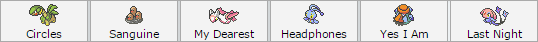
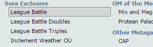
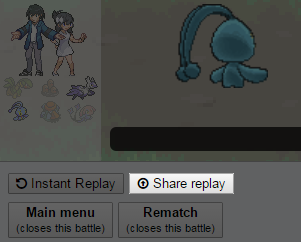
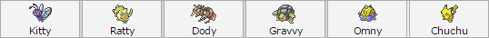
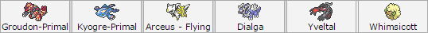

How do I Start a Challenge?
First of all, register your team of 6 to a member of the Admin Team. Admin Team names are highlighted in the userlist, as shown in the image below. If you don't
know what registering means, don't worry; just PM an Admin Team member, and they'll gladly help you out from there.

These six Pokémon are to remain the same throughout most of your challenge. This lock only applies on species and form, however.
You're allowed to change EVs,
movesets, and nicknames, and there won't be an issue with your challenge.
Changing your team of 6 is allowed, but you forfeit all the badges
you acquired up to that point.

Leaders And Elite 4s are challenged using the League Battle format. This format differs from standard OU in that Monotype unbans were lifted for Leaders. This allows Leaders
to hold their ground against Monotype bans, which are also lifted for the challenger. If you need information regarding a League member, you can always use the following
commands in the server: /[name] or /[type] (e.g. /noah).

After winning a league battle, remember to click Save Replay. This is crucial, as you need to show a link to the replay to a member of the Admin Team. Doing so will
earn you server bucks (currencies) depending on the rank of the member you defeated, as well as add up to your overall badge count. Defeating one Gym Leader earns
you one badge, so keep this in mind. Don't worry about doing anything if you lose, as your opponent will take care of everything. However, you cannot challenge the same
league member for a whole 24 hours.

Upon collecting 8 Gym Badges, a challenger can move on to challenge the Frontiers. Defeating a Frontier earns you a Frontier Symbol.
2 Frontier Symbols are needed to
move on to the Elite Four, while 4 Frontier Symbols are required to move on to the Elite Frontiers.
All 4 Frontier Symbols and 2 Elite Frontier symbols are required
to challenge the Frontier Head. If one loses to the second Elite Frontier they challenge or the Frontier Head, the challenger must forfeit one Frontier Symbol and
one Elite Frontier symbol. During the Frontier stage of the challenge, challengers are not locked to any single team, and are free to change teams to adhere to the
rulesets.

Challengers have to defeat all Elite 4 members consecutively, without fail. Suffering defeat in the hands of an Elite 4 member resets your Elite 4 run, and you have to try again from the first Elite 4. There is no set order in which the Elite 4s need to be challenged, though.
Defeating all 4 Elite 4 members allows challengers to battle the two Soran Champions. Losing to one means you have to battle the other again, if you already won against
the other. However, there is no set order in which you have to battle the Champions. During the Champions stage of the challenge, challengers are not locked to any
single team, and are free to change teams to adhere to the rulesets.

To enter the Hall of Fame, challengers must defeat both Champions and the Frontier Head, though there is no specific order in which this needs to be done.